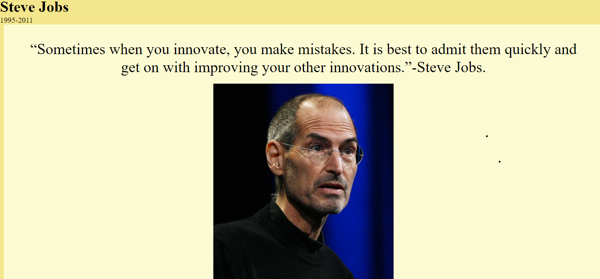
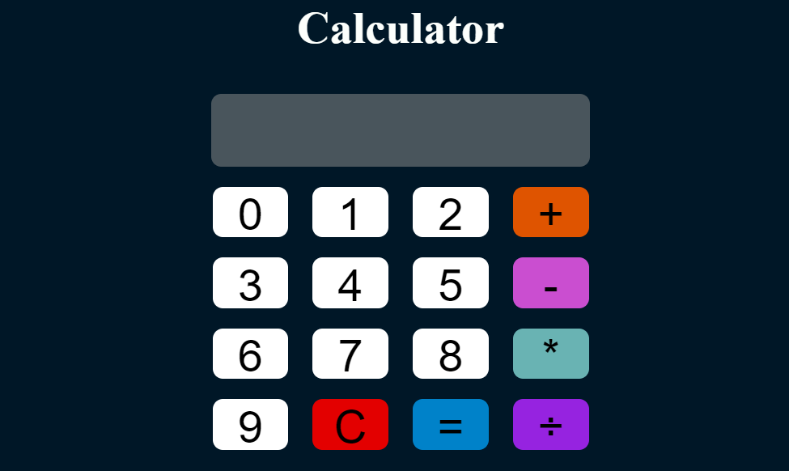
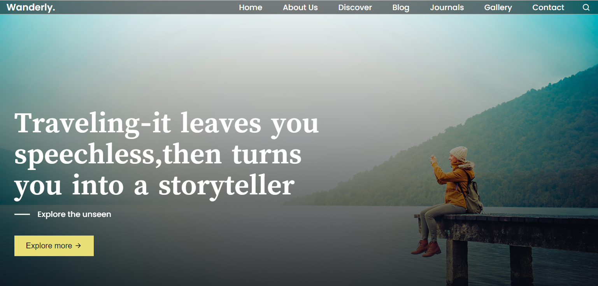

Frontend Developer
I am a passionate frontend developer with over 5 years of experience. My expertise lies in HTML, CSS, and JavaScript, and I love to create beautiful and user-friendly websites.
The Steve Jobs Tribute Page is a web project I created to honor the life and accomplishments of Steve Jobs. It serves as a platform to celebrate his innovations and contributions to technology, providing a brief overview of his life and major milestones. I used HTML, CSS to create an engaging and informative page that pays homage to one of the greatest minds in modern technology.
The Basic Calculator is a simple web application that I created using HTML, CSS, and JavaScript. It allows users to perform basic mathematical operations such as addition, subtraction, multiplication, and division. The calculator has a user-friendly interface with large buttons for easy input and an interactive display to show the results. It's a handy tool for quick calculations, and I built it as a personal project to improve my JavaScript skills.
Wanderly is a travel web page that I developed using HTML, CSS, and JavaScript. It's designed to help users plan their next adventure by providing information about popular travel destinations, activities, and accommodations. The page features a clean and modern design, with stunning images and engaging content to inspire wanderlust. I built Wanderly as a side project to showcase my web development skills and to share my passion for travel with others.
Email: kavya272003@gmail.com
Phone: 9941599720
Github:kavyageetha19
Linked In:kavyaM19